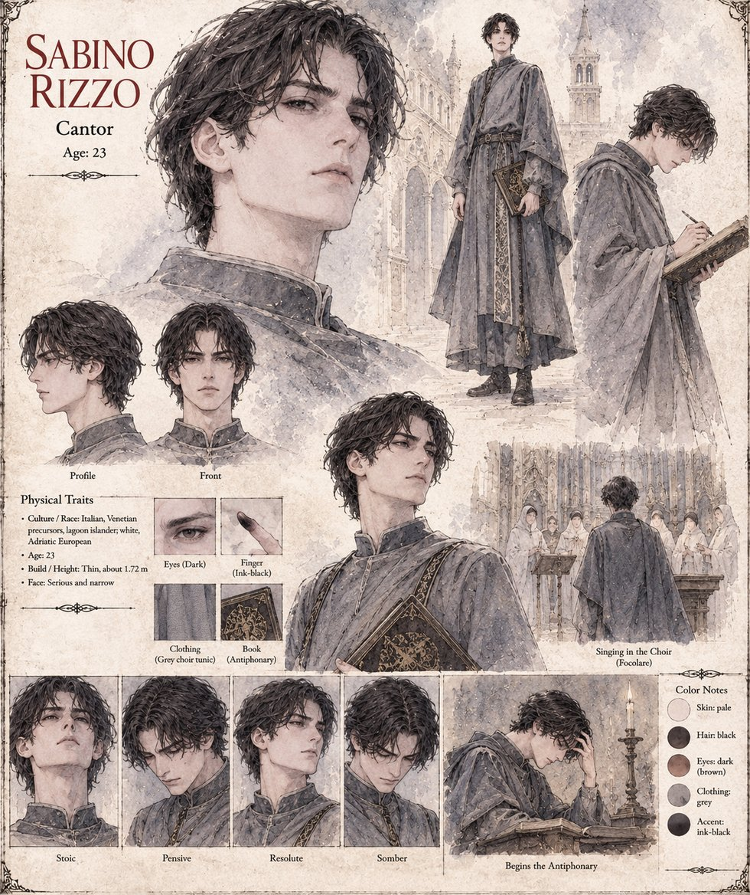

Sabino Rizzo
Cantor of the parish choir of Focolare · keeper of the Antiphonary · asker of names for forty years · 23
A thin, serious cantor of twenty-three from the parish choir of Focolare, who has sung tenor for twelve years and been needed in all of them for nothing but pitch. On the third evening at the fence he finds that he can set down what he hears from the hollow in the old notation of pitch and length, and he begins a book, the Antiphonary, entering for each replay the name of the dead, the date of the taking, the height of the voice and its duration in breaths, in columns ruled with a borrowed straight-edge. It is the first thing anyone had required of him that could not have been done by somebody else. He rules each page twice and writes the names in square notes, four lines to a staff, so that a stranger might take it for a psalter. By the end of the autumn it holds nine entries in a hand as clean as a tax roll, and Agata, seeing it, feels the vertigo of coming upon her own trade in a foreign land: two ledgers, kept by two parties who would each have died rather than consult the other, of the same nine dead.
When the hollow replays a drover’s journeyman nobody knows, he says I have no name for him, and the foreigner Higaide supplies it. Sabino writes Tonin, drover’s journeyman; name given by the keeper of the Dark Ground, and it is the first time the two ledgers touch. After the Great Lighting the hollow does not open; he sits with his pen lifted, writes nothing, and makes at the foot of the page a small plain mark. He is the first to understand the Interdict, and comes back across the grass at a half-run with the Antiphonary clutched to his chest to say that the Legate has put out the flame: They say we are nothing. When Sergeant Piovesan asks who Menego was, he finishes ruling his line and answers from the entry. When the pale hermit walks down the row he looks straight at him for the length of a held breath, writes nothing, and puts his hand to his forehead as though he had been about to say something and had lost it.
The Antiphonary ends at seventy entries. When the Listeners are received into the Order as the Confraternity of the Second Night, the custom of asking every pilgrim’s name at dusk passes to brothers in small grey habits, and Sabino Rizzo asked it for forty years. He ruled each page twice.
The manuscript gives his age, his thin, serious look, his tenor, the straight-edge and the notation; it gives no height, hair or eye colour. The sheet’s build of about 1.72 m, narrow face, dark eyes, black hair, ink-black finger and long grey choir robe with a gold-patterned stole are its own, as are its panels Stoic, Pensive, Resolute and Somber, its view Singing in the Choir (Focolare) and its scene Begins the Antiphonary, which shows him head in hand at a lectern with a lit candle; in the manuscript he begins it at the fence on the third evening. Its title, Cantor, and age follow the manuscript.
“I have no name for him”